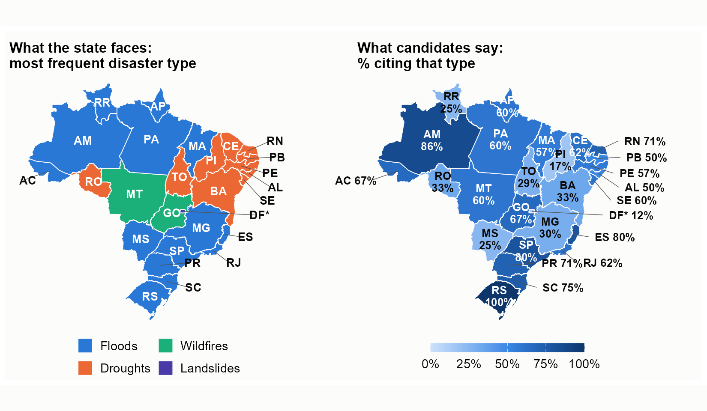
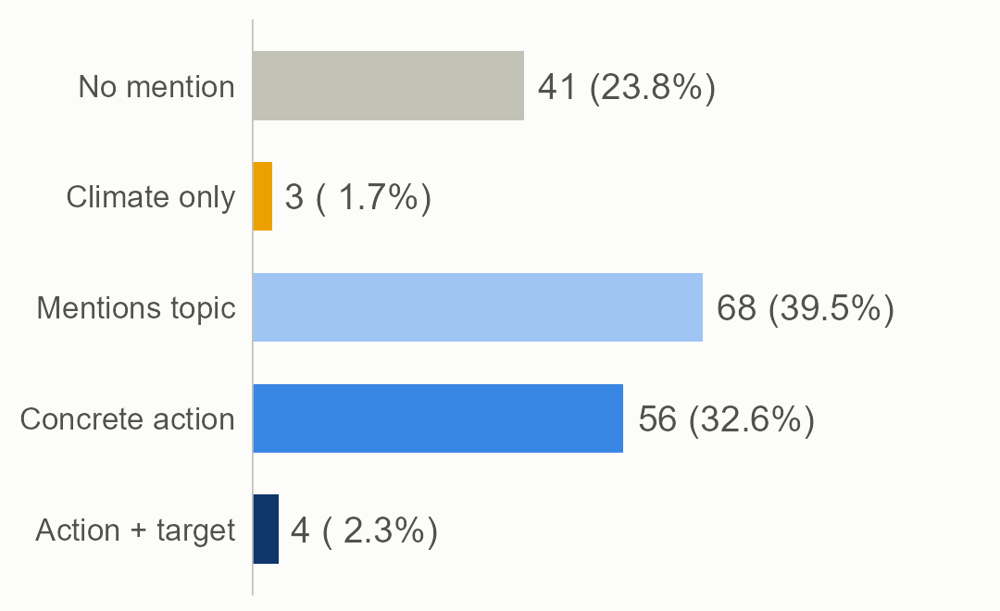

Disaster risk in the government plans of Brazil's 2026 gubernatorial candidates
What 172 candidates say, and leave unsaid, about floods, droughts, wildfires and landslides. Content analysis with local AI and the acR package.
74.4%
mention disaster risk in their plan
34.9%
have concrete action in most of their passages
4
tie action to a target, deadline or budget
3
promise an amount in reais for the topic
The disaster that hits each state most, and how many candidates cite it

How much each candidate addresses the topic

What the plans show
- Mention without promise. Only 0.8% of passages carry action with a target, deadline, indicator or budget.
- Before the disaster. Prevention and preparedness in 71.5% of candidates; response in 34.9%; recovery in 24.4%.
- Plans do not follow the disaster. In Piauí, drought is 92% of disaster records, yet only 17% of candidates cite it. Those who suffer most do not promise more (Spearman -0.02).
Anderson Henrique · CEM/USP (FAPESP) · Ipea · INCT QualiGov · UFPEGovernment plans (TSE, data frozen 23/09/2026) · Atlas Digital de Desastres (MIDR/S2iD) · Code: github.com/andersonheri/planos-governo-risco-desastre-2026